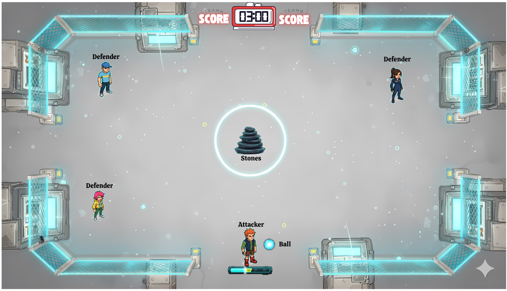
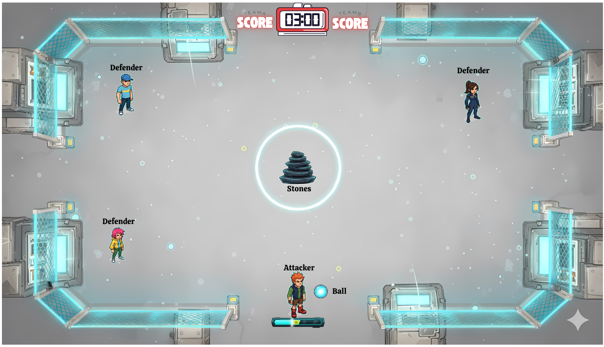

Version: 1.1 | Game Title: Pit2 (Working Title) | Genre: 2D, Team-Based, Multiplayer Arcade Sport | Target Audience: Casual to mid-core players | Platform: PC
1. Game Overview
1.1. High Concept
Pit2 is a modern, 2D multiplayer adaptation of the traditional Indian sport, Lagori (also known as Pitthu or Seven Stones). Two teams of three players, "Hitters" and "Seekers," compete in a strategic contest of accuracy, speed, and teamwork. It’s a game of throwing, dodging, and rebuilding under pressure.
1.2. Core Gameplay Loop
The game is played in rounds. One team is the Attacking Team (Hitters) and the other is the Defending Team (Seekers).
- The Hit: An Attacker throws a ball at a central stack of seven stones, using a Quick Time Event (QTE) mechanic to determine the throw's power and accuracy.
- The Scatter: The stones fly across the map. The Defending Team must now retrieve them one by one.
- The Hunt: The Attacker retrieves the ball and attempts to hit the Defending players to eliminate them from the round.
- The Rebuild: The Defenders must bring the stones back to the central point and re-stack them, using a precision-based QTE for each placement. A failed QTE causes the currently built portion of the stack to collapse.
- Round End: The round concludes when the Defenders successfully rebuild the stack, all Defenders are eliminated, or the time expires.
1.3. Unique Selling Points
- Digitized Tradition: A fresh take on a beloved, classic outdoor game.
- Skill-Based QTEs: Success is driven by player skill and timing, not just luck.
- Intense Team Dynamics: Constant communication and strategy are required for both attacking and defending roles.
- Fast-Paced Rounds: Quick, engaging matches that are perfect for both short and long play sessions.
- Deep Customization: Players can personalize their characters and equipment.
2. Game Mechanics
2.1. Player Roles & Teams
- The game is exclusively 3v3.
- Matches consist of 6 rounds.
- Teams switch roles after 3 rounds. (e.g., Team A attacks for rounds 1-3, defends for rounds 4-6).
- On the Attacking team, the role of the primary "Hitter" rotates, giving each player one chance to initiate a round.
2.2. The Attacking Phase (Hitter)
- The Hit QTE: A power/accuracy bar appears. The player must press a button to stop a moving cursor.
- Perfect Hit (Center): All 7 stones scatter far across the map. Maximum points awarded. The ball moves with higher velocity.
- Good Hit (Near Center): 4-6 stones are knocked down.
- Poor Hit (Edges): 1-3 stones are knocked down and don't travel far.
- Miss: Each attacker gets two chances to hit the stack. If the first throw misses, they get an immediate second attempt. If the second throw also misses, the turn passes to the next attacker on the team. If all three attackers exhaust their chances (6 total misses for the team), the round is forfeited, and the defending team wins the round by default.
- Elimination: After the initial hit, the Hitter is free to move, pick up the ball, and throw it at the Defenders. A successful hit eliminates that Defender for the rest of the round.
2.3. The Defending Phase (Seeker)
- Stone Collection: Defenders must run to the scattered stones to pick them up. A player can only carry one stone at a time.
- The Stack QTE: Upon returning to the central stacking point with a stone, a precision QTE appears. This is a smaller, more difficult bar than the hitting QTE.
- Success: The stone is placed correctly on the stack.
- Failure: The player drops their stone, and the entire stack they have rebuilt so far collapses, scattering those specific stones nearby. This creates a high-risk, high-reward scenario, especially when placing the final stones.
3. Detailed Screen & UI Flow
This section details the entire user journey from launching the game to completing a match.
3.1. Main Menu Screen
Visuals: A clean, energetic UI with an animated background showing highlights from a match. The player's customized character is prominently displayed. A social panel shows online friends.
Options:
- Find Match: Enters the public matchmaking queue. Players can queue solo or in a pre-made party of up to 3.
- Join Lobby: A text field appears to enter a lobby code for a private match.
- Customize: Accesses the character and ball skin customization menu.
- Settings: Opens game settings (Graphics, Audio, Controls).
- Credits: Shows the development team credits.
- Exit Game: Closes the application.
3.2. The Matchmaking Flow
Click "Find Match": The Main Menu UI animates away, replaced by a "Searching for Match" screen. On-screen elements:
- An animated graphic (e.g., a searching radar).
- Estimated Wait Time counter.
- Player/Party status display.
- A prominent "Cancel" button.
Match Found: A loud, distinct audio cue plays. A "Match Found!" modal popup appears. On-screen elements:
- Large "ACCEPT" button.
- Smaller "Decline" button.
- A 10-second countdown timer. If it expires, the action is considered a decline.
- If a player declines or fails to accept, they are returned to the Main Menu with a minor, short-term matchmaking cooldown penalty (e.g., 1 minute).
3.3. Match Lobby & Map Selection
Joining Match Lobby: Once 6 players accept, they are transitioned to the Match Lobby screen. On-screen elements:
- Two columns for "Team A" and "Team B" with player banners.
- A chat box for team and all-chat.
- A 30-second countdown timer until the map ban phase begins.
Map Ban Phase: A pool of 5 maps is displayed. The UI clearly indicates which team's turn it is to ban.
- Team A bans one map (a red 'X' appears over it).
- Team B bans one map.
- Team A bans a second map.
- Team B bans a second map.
- The last remaining map is highlighted and selected for the match.
3.4. Match Loading & Pre-Round Sequence
Loading Screen: Appears after the map is selected. On-screen elements:
- Splash art of the selected map.
- Player banners for both teams.
- A random gameplay tip (e.g., "A Perfect Hit scatters all 7 stones!").
- Loading progress indicator.
Match Introduction (15 seconds): A short, unskippable instructional screen. On-screen elements:
- A slow pan or fly-through of the map.
- Text overlays explaining the core objectives for each role.
Role Assignment Popup (5 seconds): A large, full-screen overlay announces the starting roles. Content: "YOU ARE ATTACKERS" or "YOU ARE DEFENDERS" in a bold, team-colored font. Sub-text: "Attack for the first 3 rounds."
First Hitter Assignment (5 seconds): A second popup immediately follows, specific to the Attacking team. Content: A spotlight on the first player to throw, e.g., "[Player_Name] is hitting first!" A 5-second countdown timer to the start of the round appears, allowing players to get into position.
3.5. In-Game HUD (Heads-Up Display)
- Top Center: Round Timer, Round Number (e.g., Round 2/6), Overall Team Score.
- Top Left (Attacker Info): Icon of the current Hitter, ball possession status.
- Top Right (Defender Info): Status of all 3 Defenders (Alive, Carrying Stone, Eliminated).
- Center-Right: A visual indicator of the stack's progress (e.g., 4/7 stones stacked).
3.6. Mid-Match Flow
Round End: The game briefly freezes on the final action, then a "ROUND WON" or "ROUND LOST" banner appears. A small summary shows points earned in that round. A 10-second countdown to the next round begins.
Half-Time (After Round 3): A dedicated "HALF-TIME" screen appears for 10 seconds. On-screen elements:
- "SWITCHING SIDES" displayed prominently.
- The current score is shown (Team A: X / Team B: Y).
- A message confirms the new role: "You are now DEFENDERS".
3.7. End of Match Flow
Match Over Screen: A large "VICTORY" or "DEFEAT" banner fills the screen, with appropriate sound effects and music.
Scoreboard Screen: Automatically transitions after 5 seconds. A detailed scoreboard shows stats for all 6 players. Columns: Player Name, Eliminations, Stones Stacked, Round Points, Total Score. The top-performing player is highlighted as the "Match MVP". A "Return to Main Menu" button is present.
Progression Screen: After the scoreboard, players see their personal progression. On-screen elements:
- Experience points (XP) gained.
- Level-up progress bar.
- Battle Pass progression track.
- Any new items unlocked or rewards earned are displayed in a celebratory popup.
4. Scoring System
Points are awarded at the end of each round. The team with the highest total score after 6 rounds wins the match.
4.1. Attacker Points
Initial Hit Bonus:
- Perfect Hit: +100 points
- Good Hit: +50 points
- Poor Hit: +25 points
Elimination Bonus:
- Per Defender Eliminated: +150 points
- Team Wipe (All 3 Defenders Eliminated): +200 bonus points
- Round Win (Defenders fail to stack in time): +300 points
4.2. Defender Points
- Partial Stack: If the round ends due to time or a team wipe, points are awarded for each stone successfully placed: +30 points per stone.
- Round Win (Full Stack Rebuilt): +500 points
Bonuses for Winning the Round:
- Speed Bonus (stack completed with over 30 seconds left): +100 points
- Flawless Bonus (stack completed with no Defenders eliminated): +150 points
5. Customization & Monetization
- Character Skins: A variety of cosmetic outfits that players can unlock or purchase.
- Ball Skins: Cosmetic skins for the throwing ball (e.g., glowing, patterned, themed).
- Monetization Strategy: The game will be free-to-play, supported by a cosmetic-only in-game store and a seasonal Battle Pass system that rewards players for playing. There will be no pay-to-win mechanics.
6. Maps
The 5 launch maps will each have a distinct theme and layout with unique obstacles to provide strategic variety.
- Urban Rooftop: A cityscape at dusk with AC units and vents for cover.
- Temple Ruins: An ancient courtyard with crumbling pillars and walls.
- Beach Cove: A sunny beach with palm trees, rocks, and sandcastles.
- Market Square: A vibrant town market with stalls and carts to navigate.
- Cyber Arena: A futuristic, neon-lit arena with digital barriers.